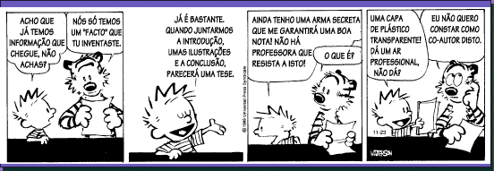

Licenciatura em Engenharia
Electrotécnica e de Computadores
Projecto,
Seminário ou Trabalho Final de Curso
Funcionamento
Curso: Licenciatura em Engenharia Electrotécnica e de Computadores
Ano: 5º ano, todos os ramos, anual
Escolaridade: 5/15 horas por semana
No SiFEUP: P/S/TFC (Energia), P/S/TFC(APEL), P/S/TFC(TEC)
Consultar aqui a ficha da disciplina.
Docentes
Coordenação
Francisco José de Oliveira Restivo, Professor Associado
Orientação dos trabalhos
Ver aqui a lista de docentesObjectivos
A disciplina de Projecto, Seminário ou Trabalho Final de Curso
tem por objectivo uma aproximação dos alunos à realidade
prática da engenharia, tendo em vista a sua próxima inserção
no mundo do trabalho.
A familiarização com os conceitos de especificação,
planeamento de recursos, custos, prazo de entrega, documentação,
manutenção, reutilização, e outros, é
parte integrante desse objectivo.
Esta disciplina não pode ser realizada através de um simples
exame, exigindo a realização efectiva de um trabalho, ao
longo de um ano lectivo, sob a orientação de um docente.
Em casos especiais, nomeadamente na época de Dezembro, o tempo
de duração do projecto poderá ser encurtado, desde
que o aluno possa trabalhar mais intensivamente durante esse tempo.
Nesta página, encontram-se as regras gerais do funcionamento da disciplina, e todas as demais informações relevantes
- constituição dos grupos de alunos
- acompanhamento dos trabalhos
- avaliação final
- época de Dezembro
- calendário de eventos
- apoio de entidades exteriores.
Metodologia
Constituição dos grupos de alunos
O processo de constituição dos grupos de alunos consta de três fases distintas- recolha das propostas de Projectos,
Seminários ou Trabalhos Finais de Curso:
as propostas de trabalhos deverão ser enviadas por e-mail ao Coordenador da disciplina até à data que constar do respectivo calendário, e delas deverá constar nomeadamente o seu título, descrição resumida, número de alunos a envolver e respectivos ramos (ou áreas científicas), e ainda uma descrição mais alargada num documento (uma página A4) em formato pdf (de preferência);
alunos que pretendam sugerir trabalhos devem igualmente fazê-lo neste prazo; - recolha das candidaturas de
alunos ou grupos de alunos:
as candidaturas deverão ser enviadas por e-mail ao Coordenador da disciplina até à data que constar do respectivo calendário;
cada aluno pode candidatar-se individualmente a três trabalhos, devendo indicá-los por ordem decrescente de prioridade; candidatando-se a trabalhos de grupo, deve também indicar se pretende escolher o grupo no caso do trabalho lhe ser atribuído ou se deixa a sua constituição ao critério do Coordenador da disicplina;
docentes que pretendam orientar trabalhos sugeridos por alunos devem igualmente fazê-lo neste prazo; - elaboração da lista dos trabalhos
a realizar:
a elaboração da lista de trabalhos inicia-se imediatamente após o fim do prazo de recolha de candidaturas, e só termina quando todos os alunos inscritos na disicplina tiverem um trabalho atribuído;
as regras a seguir na afectação dos alunos aos trabalhos têm como objectivo- satisfazer as primeiras escolhas dos alunos
- garantir que todos os docentes tenham pelo menos um trabalho atribuído
A aprovação na disicplina exige naturalmente que o aluno
esteja legalmente inscrito e que tenha realizado o trabalho desde o início
do ano lectivo.
As listas seguintes indicam os alunos que não
têm a sua situação devidamente regularizada
- lista de alunos sem trabalho atribuído.
- lista de alunos que ainda não se inscreveram.
Acompanhamento dos trabalhos
O acompanhamento dos trabalhos incluirá duas componentes obrigatórias- a página WWW do trabalho, em que constarão, nomeadamente,
- nome do projecto,
- lista de participantes (docente e alunos),
- objectivo do projecto,
- metodologia do projecto,
- local de trabalho,
- calendário,
- resultados intermédios e finais esperados,
- critérios de sucesso,
- informações relativas a direitos de propriedade intelectual (se relevantes),
- os relatórios de progresso, que deverão ser, pelo menos, dois.
Avaliação final
A avaliação final de
cada aluno basear-se-á no trabalho realizado, no relatório
final do projecto e na sua apresentação
pública, e será da responsabilidade de dois docentes,
o orientador do trabalho e um segundo docente indicado pelo coordenador
da disciplina.
A avaliação incidirá não só sobre a
componente técnica do trabalho, mas considerará necessariamente
o seu planeamento, a estrutura e escrita do relatório e, se aplicáveis,
considerações económicas e ambientais, questões
éticas, questões de saúde e segurança e outras.
Em 1999/2000, a apresentação pública terá o formato de sessões de posters, que servirão também para a divulgação externa dos trabalhos realizados. Para além dos posters, deverão ser preparadas nos laboratórios demonstrações dos trabalhos para eventuais interessados.
A nota final de cada aluno será obtida pela média pesada de três: a atribuída ao trabalho realizado (pelo orientador), com o peso de 60%, e as atribuídas à apresentação pública (pelo orientador e pelo segundo membro do júri), com o peso de 20% cada uma.
Época de Dezembro
Os alunos inscritos para a época de Dezembro estão sujeitos a um regime especial.
Se o aluno já tiver inscrição à disciplina, tendo iniciado um trabalho durante o ano lectivo, mas não tendo obtido aprovação na época regular, e se o docente respectivo entender que está em condições de concluir o seu trabalho até à data em que termina a época de Dezembro, então esse trabalho pode manter-se.
Nos outros casos, o aluno deve dirigir-se ao Coordenador da disciplina imediatamente após verificar-se as condições que lhe permitem inscrever-se para a época de Dezembro, e nunca depois da data prevista no calendário da disciplina.
A avaliação far-se-á em moldes semelhantes aos da época normal, com as adaptações que venham a revelar-se necessárias.
Calendário de eventos 1999/2000
|
Evento
|
Data limite
|
| Apresentação de propostas |
17 de Setembro de 1999
|
| Divulgação de propostas |
20 de Setembro de 1999
|
| Apresentação de candidaturas |
24 de Setembro de 1999
|
| Divulgação da lista de trabalhos |
1 de Outubro de 1999
|
| Publicação da página WWW do trabalho |
29 de Outubro de 1999
|
| Primeiro relatório de progresso |
17 de Dezembro de 1999
|
| Segundo relatório de progresso |
28 de Abril de 2000
|
| Relatório final |
14 de Julho de 2000
ou outra, acordada com o orientador |
| Apresentação pública dos trabalhos |
26 a 28 de Julho de 2000
|
| Definição de trabalhos para a época de Dezembro |
29 de Setembro de 2000
|
Apoio de entidades exteriores
O apoio à realização de trabalhos no âmbito da disciplina de Projecto, Seminário ou Trabalho Final de Curso por parte de empresas e outras entidades exteriores à FEUP é desejável e constitui um factor de valorização dos próprios trabalhos, contribuindo ao mesmo tempo para o estreitamento das relações entre a Faculdade e o meio exterior.
Com o objectivo de encorajar a realização dos trabalhos nas próprias empresas, em 2000-2001, a disciplina ocorrerá na totalidade no segundo semestre, correspondendo a 80% da respectiva carga horária.
O acesso por parte de qualquer entidade exterior à FEUP à utilização dos resultados dos trabalhos realizados no âmbito desta disciplina será regulado por protocolo específico.
